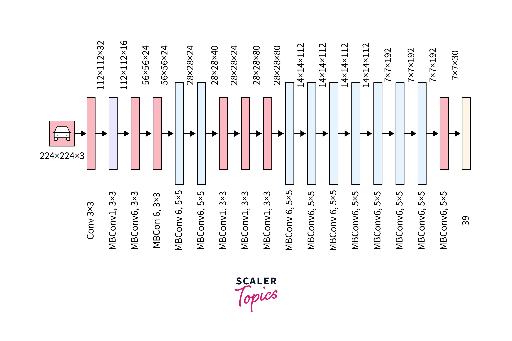

Our Network Architectures
We benchmarked three state-of-the-art CNNs to find the perfect balance of speed and accuracy.

Promotes feature reuse by connecting each layer to every other layer in a feed-forward manner. This dense connectivity enables direct information flow, improving feature propagation and solving vanishing gradient problems.

A highly scalable architecture that achieves peak accuracy by uniformly scaling the network across width, depth, and resolution. This balanced strategy provides optimal resource utilization.

Designed specifically for resource-constrained environments. It uses depthwise separable convolutions to significantly reduce parameters and computational cost, making it ideal for real-time edge computing.